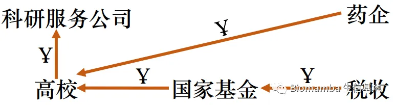
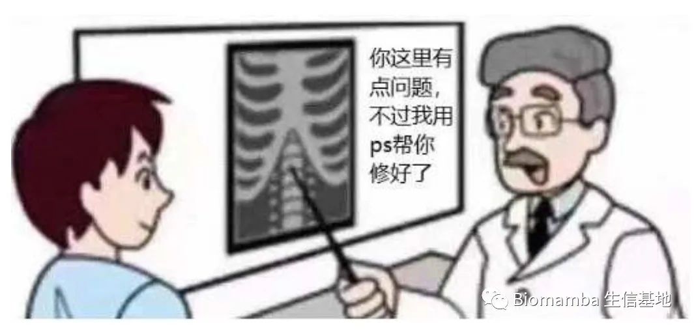
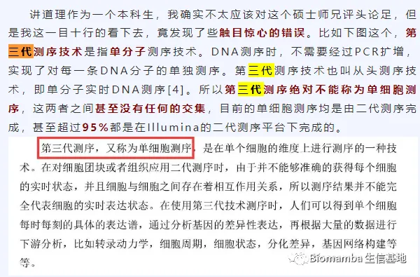
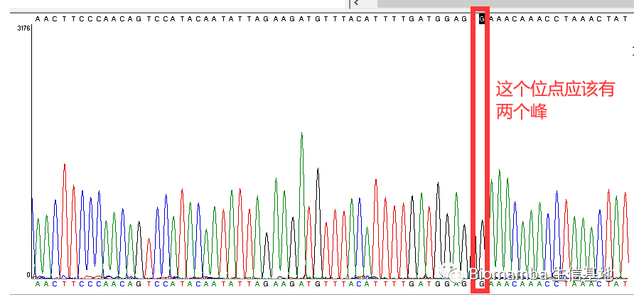

反正有人会分析，我还学生信干嘛
原文：https://mp.weixin.qq.com/s?__biz=MzAwMzIzOTk5OQ==&mid=2247494705&idx=1&sn=2d1318fdcd2a39f371fb4d2de8006f65&chksm=9b3c9561ac4b1c7708edb37a35e0c38438d461a0683e65f274dc9d0f71ca4d0195c3e672c5f4#rd 合集：漫谈胡侃
前两天看见有人在群里问：原来公司的测序报告里都把数据给我分析好了，那我学习写代码的意义是什么。这句话属实是踩到了我的红线 了，我对科研外包服务向来嗤之以鼻(谈一谈现在的科研外包服务)。下图是我理解的目前主要科研经费的流动方向，如果各位甘愿自己在科研过程中充当资金流动的介质 ，那么完全不用再看下文了。

外包服务给我的感觉，用下面这张图完全可以高度概括，发生不自知的错误几乎是必然 的。此前我在国内Top3的测序公司做单细胞转录组测序时，返回的注释结果惨不忍睹，注释的细胞类型甚至不属于我所提供的器官，甚至还有拿参考文献的作者来命名的细胞类群。倒不是说测序公司的分析结果不可靠，只是他人没有办法完全理解你所参与项目的各类背景知识，完成自己的课题，最靠谱的人自然是你本人。把自己的命运交在别人手里，多少有些不放心。
如果惯性地 认为测序公司的分析结果值得信赖，可以直接拿来撰文；师兄/师姐说得很对，我应该听从；文献报道的就是正确，全盘接受；那么我认为你就迈出了科研失败 的第一步。所以我现在甚至在开组会分享文献时故意给出错误的信息让其他成员判断正误，为的就是让大家保持一颗怀疑的心。倘若大家看文献时全盘接收，那么这里把单细胞测序称作第三代测序的谬误 就会像病毒一样传播下去(单细胞测序做到什么程度能毕业|硕士篇)：
再说一个我本人遇到的真实事件：之前买了批鼠，公司承诺给的是杂合子 。但我的怀疑心理涌了上来，做了个基因型鉴定，发现居然拿到的是纯合子(如下图的桑格测序结果所示)，倘若我理所应当的认为拿到的就是杂合子，啥后果不用多说了吧。
综上，我认为，不能独立思考、不能自行科研就是科研失败的第一步 。往期胡说八道 回顾： 谈一谈现在的科研外包服务 谁动了你的奶酪？ 笑一笑也就算了 粉丝迷惑行为鉴赏 劣币逐良币 你们知道丐帮麽 不积跬步无以至千里 我可是搞正经科研的,你们的烂饭我可不敢吃 科研界竟有如此不肃之风 开学在即，给导师十条忠告 终于轮到我给别人拒稿了吧 答疑的热情逐渐消减

如何联系我们
 公众号后台消息更新不及时，超过48h便不允许回复读者消息，这里给大家留一下领取资料、免费服务器的微信号 ，方便各位随时交流、提建议（由助理接待）。此外呼声一直很高的交流群 也建好了，欢迎大家入群讨论：永久免费的千人生信、科研交流群
公众号后台消息更新不及时，超过48h便不允许回复读者消息，这里给大家留一下领取资料、免费服务器的微信号 ，方便各位随时交流、提建议（由助理接待）。此外呼声一直很高的交流群 也建好了，欢迎大家入群讨论：永久免费的千人生信、科研交流群
大家可以阅读完这几篇之后添加给生信入门初学者的小贴士 如何搜索公众号过往发布内容

 您点的每个赞，我都认真当成了喜欢
您点的每个赞，我都认真当成了喜欢